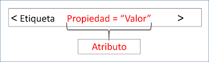

Bienvenido estudiante.Introducción:En el siguiente OVI va a encontrar las definiciones, explicaciones y ejemplos, sobre las partes que conforman una estructura de una página hecha con HTML. Todo con el enfoque de guiar al estudiante, a una mejor comprensión sobre los temas referentes al curso de Diseño web. Puede sentirse libre de explorar cada una de las páginas del OVI y tomar nota de las partes que más interés le haga. El ojetivo es que logre compreder de la manera más sencilla cada uno de los terminos que se expondrán en las siguentes páginas. Objetivo General.Diseñar un OVI donde se explique las estructuras básicas de HTML5. Objetivos Especificos. |
Estructutra de una etiqueda:Ejemplos de páginas Web:
|